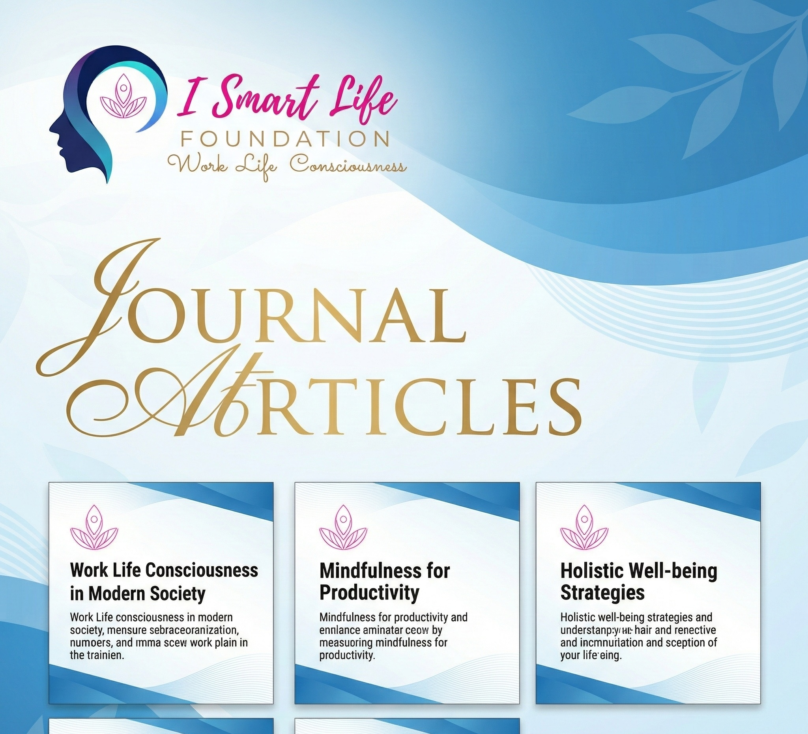

Integrating Indian Knowledge Systems with Modern Science
iSmartLife is a research-driven initiative exploring Yoga, IKS, neuroscience, physiology, and conscious technologies through rigorous academic inquiry and public scholarship.

About iSmartLife
iSmartLife is an interdisciplinary platform dedicated to advancing research and public understanding at the intersection of Indian Knowledge Systems (IKS), Yoga, contemplative sciences, neuroscience, physiology, and emerging technologies.
The initiative emphasizes academic integrity, experimental rigor, ethical responsibility, and translational impact.
Founder
Mahesh Lohar — Principal Integrator & Founder
Research Publications
Click banner to explore peer-reviewed journal literature
Journal Articles
- Yoga and Heart Rate Variability: A Comprehensive Review — Autonomic regulation & HRV
- Yoga Breathing Through a Particular Nostril — Lateralized autonomic effects
- Acute Slow Breathing Improves Cognitive Function — Attention & vagal tone
Click banner to explore conference proceedings
Conference Papers
Click banner to explore academic books & chapters
Books & Chapters
Research Blogs
1. Why Indian Knowledge Systems Need Experimental Rigor
IKS traditions are experiential, but scientific engagement demands reproducibility, transparency, and ethical rigor.
2. Breath as a Bridge Between Body and Cognition
Breath regulation modulates autonomic balance, emotional control, and attention.
3. Ethics in Yoga-Based Human Research
Teacher–student dynamics require heightened ethical safeguards.
4. Svara Yoga and the Nasal Cycle
Classical Ida–Pingala theory aligns with nasal dominance research.
5. HRV as a Yogic Biomarker
HRV provides measurable insight into parasympathetic dominance.
6. Translating Yogic Concepts into Neuroscience
Concepts like prana require careful operationalization.
7. Limits of Western Metrics in Yoga Science
Not all yogic outcomes are immediately quantifiable.
8. Conscious Technologies and Biofeedback
Wearables can support self-regulation when used mindfully.
9. Meditation and Neuroplasticity
Long-term meditation reshapes attentional networks.
10. The Future of IKS in Academia
Integration requires interdisciplinary humility and rigor.